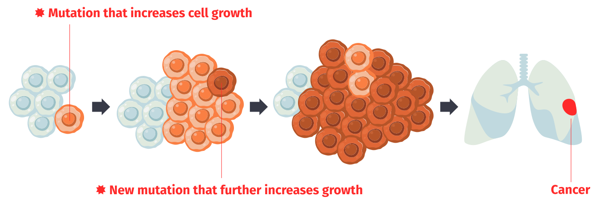

What is cancer?
Cancer is the name of a group of diseases characterized by the uncontrolled growth and proliferation of cells within the body. If you're interested in understanding cancer more deeply, keep reading.
The cell

To understand how cancer develops, let’s look at our cells and how they function.
At the heart of each cell is the nucleus, the control center, where DNA—the cell’s instruction manual—is kept.
Cells read DNA in specific segments, known as genes — much like reading words in a sentence. Most genes carry the instructions needed to make proteins.
DNA is written using only four letters (A, C, G, T). The combinations of these letters (for example, AAA or GTG) determine the protein building blocks, known as amino acids. AAA codes for the amino acid lysine (Lys), and GTG codes for the amino acid valine (Val).
Proteins are the molecules that carry out many cellular processes. So cells function thanks to the action of proteins, which are made using that are formed by following the instructions from the genes in the DNA.
Mutations
The sequence of letters in DNA can accumulate errors; which are known as mutations.
Over a lifetime, our cells naturally accumulate mutations. These can arise due to external factors such as tobacco use and exposure to ultraviolet light, or internal factors like errors during cell division.
Cells have repair mechanisms that correct many of these mutations. Despite this, some remain in the DNA.
Although unlikely, sometimes mutations can affect gene and protein sequences. If this happens, these mutations can alter how proteins work, causing them to stop functioning or to behave differently. These changes can even affect how a cell acts.
For example, the BRAF gene carries instructions to build the BRAF protein, which regulates cell growth and multiplication.

Let’s imagine that the BRAF gene acquires a mutation that alters the sequence of the BRAF protein.
This mutation makes the BRAF protein more active, causing the cell to start growing and dividing more than usual.
Cancer drivers
Cancer cells carry mutations that affect the genes and proteins responsible for regulating cell growth and death.
Mutations that cause cells to multiply faster than their neighbors are called cancer driver mutations, and the genes and proteins that carry them are referred to as cancer driver genes and proteins.
It is estimated that the accumulation of four to six cancer driver mutations is enough to initiate cancer.
Personalized medicine
Identifying cancer drivers can help us find more suitable treatments for each patient.
The specific combination of driver mutations in a patient's cancer determines how the tumor will respond to different treatments.
So by identifying a patient’s unique combination of cancer driver mutations, we will be able to select the most beneficial treatment.
Our research
Identifying the cancer driver mutations present in a patient's tumor is a significant challenge. The DNA of cancer cells carries thousands of mutations, but only a few are responsible for driving the development of the disease. How can we find them?

01.
First, we need to analyze the DNA of cancer cells from thousands of patients around the world to identify their mutations.

02.
Next, we have to apply statistical tools to identify cancer driver genes. The more tumors we analyze, the more accurate our results will be.


03.
For each driver gene, we use an artificial intelligence tool to identify the driver mutations.

04.
All these data, together with information about the response of each mutation to treatment, have been incorporated into the Cancer Genome Interpreter.
The Cancer Genome Interpreter is a tool that interprets the set of mutations present in a patient’s tumor and predicts which therapy could be most beneficial.

Do you want to find out how it works?
Click below to start the simulation!